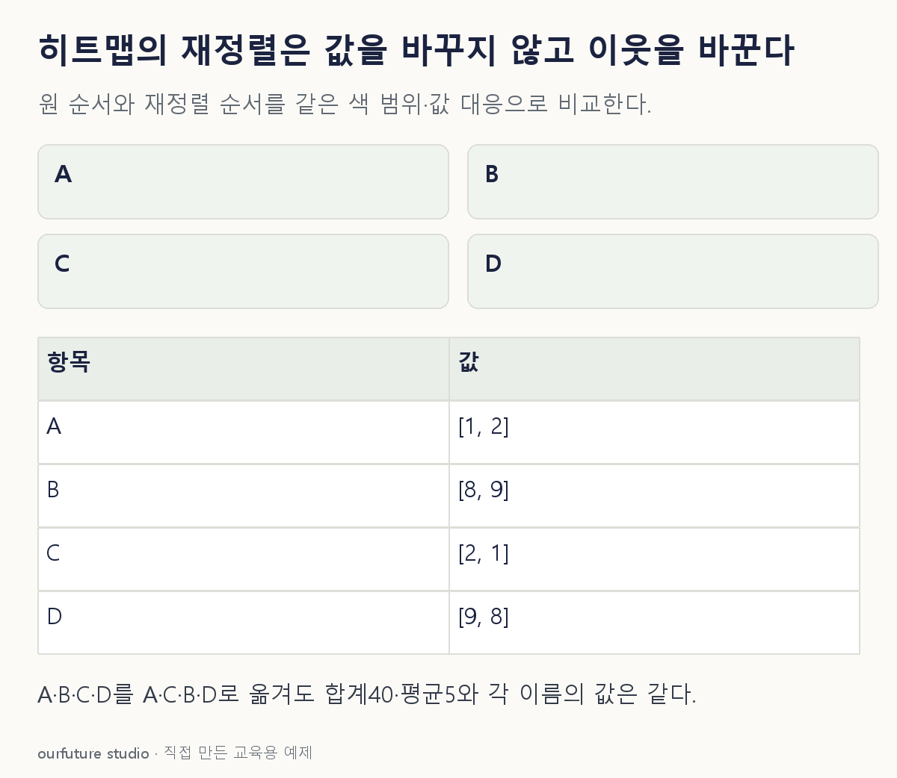

핵심 이론
히트맵은 행과 열의 교차값을 색으로 나타낸다. 비슷한 행이 멀리 떨어져 있으면 공통 패턴을 읽기 어려워, 거리나 유사도에 따라 이웃하게 재배치할 수 있다. 이때 원래 행 이름·열 이름과 각 값의 대응을 유지해야 한다. 행A를 옮겼는데 이름만 남겨 다른 값에 붙이면 재정렬이 아니라 자료 표기의 오류다.
순서만 바꿨다면 모든 값의 모음·합계·평균·표본수는 그대로다. 색 범위도 같게 두면 같은 값은 같은 색이다. 재정렬된 블록이 눈에 잘 띈다고 새로 상관이 생겼거나 인과관계가 발견된 것은 아니다. 어떤 거리·연결법을 사용했는지에 따라 배열이 달라질 수 있으며, 패턴을 찾은 다음에는 원래 변수의 의미와 개별 관측을 다시 확인한다.
clustermap 같은 도구에는 재정렬뿐 아니라 행·열별 표준화 옵션도 있다. 평균을 빼거나 표준편차로 나누는 처리를 켜면 색이 나타내는 값의 의미까지 달라진다. 원래 큰 수치를 비교하려는 질문과 각 행의 상대 패턴을 비교하려는 질문을 구분한다. 값 변환 여부와 색상 범위, 결측 처리 방법을 기록해야 서로 다른 그림을 같은 단위의 비교로 오해하지 않는다.
작은 예제로 확인하기
자체 행렬은 A=(1,2), B=(8,9), C=(2,1), D=(9,8)이다. 열과 색 범위를 고정하고 행 순서만 A·C·B·D로 바꾼다.
| 행 | 열1 | 열2 |
|---|---|---|
| A | 1 | 2 |
| C | 2 | 1 |
| B | 8 | 9 |
| D | 9 | 8 |
작은 값의 두 행과 큰 값의 두 행이 가까워졌다. 하지만 전체 합계40, 평균5, A의열1값1은 그대로다. A와C의 거리√2, A와B의 거리√98처럼 비교한 수치도 행 이름 기준으로는 변하지 않는다.
그림으로 확인하기

직접 고르기
A=(1,2), B=(8,9), C=(2,1), D=(9,8)의 행 순서만 A·C·B·D로 바꾼다. 값 변환은 없고 색 범위도 같다.
재정렬 후 올바른 설명은?
- 1. 전체 합계 40과 각 이름에 연결된 값은 같다
- 2. 서로 이웃한 모든 행의 상관은 1이 된다
- 3. 관측 수가 4에서 8로 늘어난다
- 4. 값이 자동으로 평균 0으로 표준화된다
정답과 오답의 이유 확인하기
정답 1번 — 전체 합계 40과 각 이름에 연결된 값은 같다
행의 위치만 달라졌으므로 값·합계·행 수는 변하지 않는다. 비슷한 행을 이웃하게 보여주는 효과와 수치 변환을 구별한다.
- 2번: 이웃 배치는 새로운 상관을 만들거나 완전한 상관을 보장하지 않는다.
- 3번: 4행의 순서를 바꿨을 뿐 관측을 추가하지 않았다.
- 4번: 평균을 빼는 표준화는 이 문제에서 수행하지 않았다고 명시한 별도 연산이다.
조건 하나 바꾸어 풀기
이번에는 A행(1,2)에서 그 행의 평균 1.5를 빼는 별도 처리를 했다. 새 값은 무엇이며 단순 재정렬인가?
풀이: (−0.5,0.5)이며 단순 재정렬이 아니다.
평균 중심화로 숫자가 원자료값에서 행 평균과의 차이로 바뀌었다. 측정 단위는 같지만 색으로 비교하는 기준이 달라진다. 위치 변경만 수행한 앞 사례와 처리 옵션을 구분해 기록한다.
다시 떠올릴 단서
자리만 바뀌었나, 숫자도 바뀌었나.
근거와 적용 조건
- seaborn clustermap — row_cluster·col_cluster와 선택적 z_score·standard_scale. 확인일 2026-10-30.
상황·수치·보기·조건 변경은 자체 교육 예제다. 민간 복원 문항의 공식 정답이나 실제 성능·학습 효과를 뜻하지 않는다.
읽은 내용을 적용해 보기
고정 자체 행렬의 순열·중심화다. 클러스터링 알고리즘을 실행하거나 새 상관·인과를 발견한 결과가 아니다.